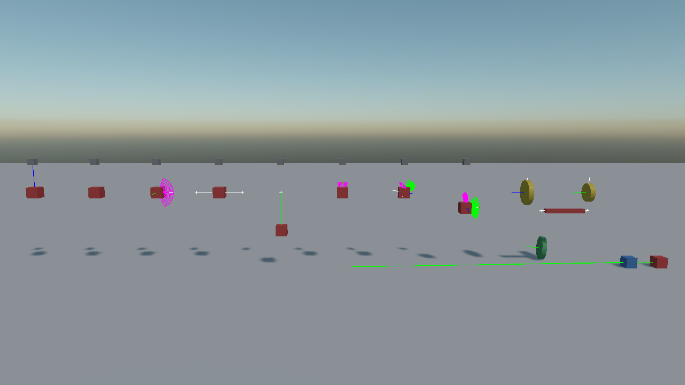
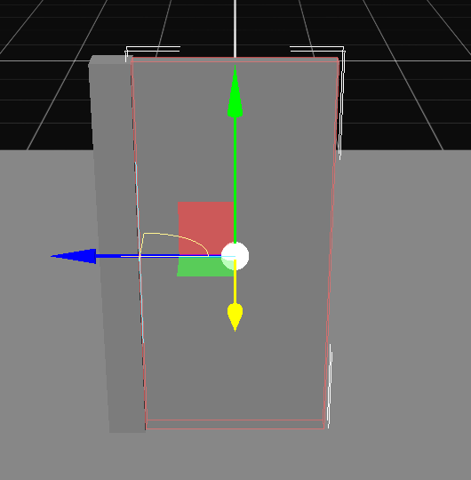
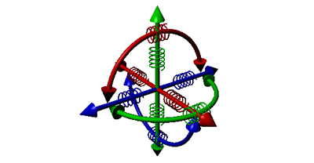

Constraints
A constraint ties two bodies together and limits how they may move relative to each other. A door is a body on a hinge, a piston is a body on a slider, a rope is a chain of bodies on point constraints, and a ragdoll is a skeleton of swing-twist constraints.
Every constraint is a component you add to the entity of the body it moves. That body is the source; the one it is tied to is the connected body.

One rig per constraint type. In each of them the grey block is bolted to the world and the red one is held by the constraint; the coloured arcs and lines are the constraints themselves, drawn by debug rendering.
Note
These replace the *Joint3D components of the previous API, with several renamed and four new ones. See Migrating from Bullet.
Either end of a constraint can be any physics body. The source is nearly always a RigidBody, since a constraint on something that cannot move has nothing to do, but the connected body is just as often a StaticBody: a door hung on a wall that is part of the level, a rope tied to a post. Body and ConnectedBody are both typed as PhysicsBody for that reason.
Common Properties
Every constraint has these. The pages that follow list only what is specific to each one.
| Property | Default | Description |
|---|---|---|
| ConnectedEntityPath | null | The entity holding the other body. Left empty, the constraint anchors to the world, which is how a door is hung on a wall that is not itself a body. A path that names an entity that does not exist, or one without a body, leaves the constraint disconnected rather than silently pinning it to the world. Changing it on a live constraint recreates it against the new body. |
| ConnectedBody | null | The other body, set directly from code, as a PhysicsBody. Takes precedence over the path. |
| Anchor | 0,0,0 | Where the constraint attaches on this body, in its local space. |
| AutoConfigureConnectedAnchor | true | Works out the matching anchor on the other body from where the two are standing when the constraint is created. |
| ConnectedAnchor | 0,0,0 | Where it attaches on the other body, when the above is off. |
| CollideConnected | false | Whether the two bodies still collide with each other. Off by default, because two bodies bolted together usually overlap and would otherwise fight their own contact every step. |
| IsHolding | true | Whether the constraint is holding at all. Turning it off releases the bodies without moving the anchors, so turning it back on picks up where it left off. |
| Priority | 0 | The order the solver works through constraints in. Higher is solved last, and the last one solved is the one that tends to win, which is what settles a fight between two constraints pulling the same body different ways. Leave it at zero otherwise. |
| SolverVelocityIterationsOverride | 0 | Per-constraint solver override. 0 uses the world's. |
| SolverPositionIterationsOverride | 0 | The same for position iterations. |
Read-only:
| Property | Description |
|---|---|
| AppliedForce | How hard the constraint is currently pulling, in newtons. |
| AppliedTorque | How hard it is currently twisting. |
| IsBroken | Whether it has given way. |
| Method | Description |
|---|---|
| Recreate() | Rebuilds the constraint, picking up the bodies' current poses as the new rest state. |
Important
Anchors are captured when the constraint is created. Move a body afterwards and the constraint pulls it back to where the anchor says it should be. Position both bodies where they belong before adding the constraint, or call Recreate() after moving them.
Constraints in Evergine Studio

A door on a HingeConstraint, selected in Evergine Studio. Beside the transform manipulator, the editor draws the constraint itself: the cyan line along the door's edge is the hinge axis, and the yellow arc is the range the door may open through.
Selecting an entity with a constraint draws the constraint in the viewport: its axis, its anchor and the limits it allows, a hinge's arc or a swing twist's cones. This is the same picture debug rendering draws at run time, available while the scene is still being built, so an anchor placed on the wrong side of a door is visible before the scene is ever run.
Breakable Constraints
A constraint can be told to give way under load:
| Property | Default | Description |
|---|---|---|
| IsBreakable | false | Whether the constraint can break. |
| BreakForce | 5000 | The pull, in newtons, that breaks it. |
| BreakTorque | 5000 | The twist, in newton-metres, that breaks it. |
PointConstraint rope = entity.FindComponent<PointConstraint>();
rope.IsBreakable = true;
rope.BreakForce = 900f;
rope.Broken += (sender, e) => this.PlaySnap();
The Broken event fires once, when it gives way.
Note
Jolt does not break constraints by itself. Evergine reads the impulse the constraint applied after each step and turns it into a force, which is what the threshold is compared against.
There are three different ways to stop a constraint holding, and they are not interchangeable: IsHolding = false releases it but keeps the anchors, so it can be resumed; IsEnabled = false disables the component; and breaking it destroys it for good.
Motors
A motor drives a constraint towards a speed or a position instead of leaving it to gravity. HingeConstraint, SliderConstraint, SwingTwistConstraint and SixDOFConstraint have one.
| Mode | What it does |
|---|---|
| Off | No motor. The constraint only restricts. |
| Velocity | Drives towards a target velocity: a wheel, a fan, a conveyor drum. |
| Position | Drives towards a target position or angle and holds there: a powered door, a piston, a servo. |
Every motor has a limit on how hard it may push: MaxMotorTorque or MaxMotorForce, and on a swing twist constraint the separate MaxSwingTorque and MaxTwistTorque. A motor that cannot reach its target falls short, which is what makes a powered door stoppable by something heavy enough.
Springs

Several constraints take a SpringParameters, which makes their limits soft instead of hard. There is no separate spring constraint: a spring is a property of a limit.
| Field | Description |
|---|---|
| Mode | FrequencyAndDamping, how many times a second it wants to oscillate, or StiffnessAndDamping, in newtons per metre. |
| FrequencyOrStiffness | The frequency or the stiffness, depending on the mode. Zero means a hard limit, with no spring at all. |
| Damping | How quickly the oscillation dies away. 1 is critical damping, which settles without overshooting. |
// A suspension-like limit: two oscillations a second, well damped.
slider.LimitsSpring = SpringParameters.FromFrequency(2f, 0.7f);
| Factory | Description |
|---|---|
| SpringParameters.FromFrequency(frequency, damping) | A spring described by how fast it wants to bounce. |
| SpringParameters.FromStiffness(stiffness, damping) | A spring described by its stiffness in N/m. |
Choosing a Constraint
| I want | Use |
|---|---|
| Two bodies welded together | Fixed |
| A ball joint: free to rotate, fixed in place | Point |
| A rope or a rod holding two bodies apart or together | Distance |
| A door, a wheel, a lever, a pendulum on an axis | Hinge |
| A piston, a drawer, a lift on rails | Slider |
| A ball joint that may not bend past a cone | Cone |
| A shoulder, a hip, a ragdoll joint | Swing Twist; see Ragdolls for a whole figure |
| Anything else: per-axis limits and motors | Six DOF |
| Two rotations geared together | Gear |
| A rotation driving a linear motion | Rack and Pinion |
| One body rising as another falls | Pulley |